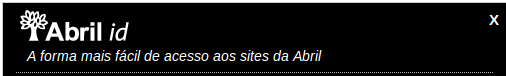

Instalação
Para instalar o Javascript do Abril ID é muito simples. Basta incluir a linha abaixo em todas as páginas onde o Abril ID for necessário.
</body> dentro da página que você quer aplicar o componente do Abril ID
- <script src="http://qa.id.abril.com.br/javascripts/widgets.js"></script>
Criação da <div>
Para que a implementação do Abril ID seja completa precisamos criar uma div dentro da pagina do seu site com um id que deve ter o mesmo nome usado no Passo 2 no campo componente. Essa div ficará responsável por apresentar Abril ID na tela por isso é importante posicionar essa div em um ponto estratégico na pagina do seu site .
- <body>
- <div id='abrilID'>
- </div>
- </body>
Configuração
Para o Abril ID funcionar em seu site é necessário incluir sua configuração.
Existem duas formas de configurar o Abril ID a forma simplificada na qual você só precisa configurar dois parâmetros:
-
Produto: que deve ser Login/ID para sua marca/site.
-
Container: que deve ser o
idde de um elementodivonde será renderizado o widget na página do site.
Segue exemplo de implementação escrito no formato json
- <script type="text/javascript">
- var id_widget_config = {
- produto: 'login_site',
- container: 'id_div_widget'
- };
- </script>
Inicialização
Antes de utilizar o componente widget é necessário criar uma instância do objeto AbrilId e inicializa-lo com os parâmetros criados no passo Configuração através do método initialize():
- <script type="text/javascript">
- var id_widget = new AbrilId();
- id_widget.initialize( id_widget_config );
- </script>
Componentes Abril ID
O Abril ID atualmente possui 4 compomentes que podem ser utilizados em seu site:
- Widget
- Include
- Topo
- Newsletter
Nas seções a seguir cada um deles é descrito com mais detalhes.
Widget
Este é o mesmo componente apresentado na seção PASSO A PASSO. Utilize essa seção como uma referência rápida ao detalhes de configuração do widget.
Widget é o componente principal do Abril ID que fornece as principais funcionalidades do sistema: criação de conta, login e recuperação de senha.
Este componente é implementado através de um box flutuante que se sobrepõe ao conteúdo da página. Se preferir uma solução onde o formulário do Abril ID é renderizado na própria página consulte o componente Include.
Caso não seja declarado o campo componente por padrão o componente carregado será o widget
Configuração Widget
- <script type="text/javascript">
- var id_widget_config = {
- produto: 'login_site',
- container: 'div_widget'
- componente: Componente.WIDGET
- };
- </script>
Exibição da tela de login
Para invocar o Abril ID na página utilizaremos um link para a realizar chamada do widget de login do Abril ID
- <a href="javascript: void(0);" onclick="id_widget.login.render();">login</a>
Include

- <script type="text/javascript">
- var configuracao = {
- produto:'nome/ID_da_seu_site',
- container: 'div_exempl'
- componente: Componente.INCLUDE
- };
- </script>
Tipos de include
É possível fazer include dos seguintes componentes na página:
- Login
- Newsletter
- Edição de Perfil Completo
- Edição de Perfil Básico
- Criação de conta
- Reset de Password
Exemplos:
- <a href="#" onclick="includes.login.render();">login</a>
- <a href="#" onclick="includes.newsletter.render();">newsletter</a>
- <a href="#" onclick="includes.signup.render();">criar conta</a>
- <a href="#" onclick="includes.profile_full_update.render();">perfil completo</a>
Topo
Topo é o componente de renderização do widget de login do Abril ID, disponível nas versões: mini, pequeno e medio
Topo mini
O topo mini exibe o logo do Abril ID junto com um botão entrar quando o usuário está deslogado, ou botão o sair caso já esteja autenticado.
- <script type="text/javascript">
- var configuracao = {
- produto:'Login/ID_do_seu_site',
- container: 'div_exempl'
- componente: Componente.TOPO,
- topo: 'mini'
- };
- </script>
Topo pequeno
O topo pequeno, além dos botões entrar e sair, exibe também as opções de autênticação através de redes sociais.
- <script type="text/javascript">
- var configuracao = {
- produto:'Login/ID_do_seu_site',
- container: 'div_exempl'
- componente: Componente.TOPO,
- topo: 'pequeno'
- };
- </script>
Topo Médio
O topo médio exibe o nome e avatar do usuário logado, além dos botões de entrar e sair e redes sociais.
O topo médio permite também customizar um link de edição de perfil no nome e no avatar do usuário logado. Esse link pode ser uma página customizada pelo site, um include de edição de perfil do Abril ID ou mesmo a página de edição de perfil no site do Abril ID.
Basta passar o link de edição de perfil através do parâmetro url_edicao_perfil na instância do Topo, conforme exemplo abaixo.
Exemplos de links:
- url_edicao_perfil: http://url_seusite/editar_perfil
- url_edicao_perfil: abril_id (Exibe a página de edição no site do Abril ID)
- url_edicao_perfil: http://url_seusite/editar_perfil/{user_id} (Exibe página de edição do site, alterando o placeholder {user_id} para o ID do usuário logado)
- <script type="text/javascript">
- var configuracao = {
- produto:'Login/ID_do_seu_site',
- container: 'div_exempl'
- url_edicao_perfil: 'http://seusite/edicao_perfil',
- componente: Componente.TOPO,
- topo: 'medio'
- };
- </script>
Configurando Layout do Abril ID
Customizar Abril IDO Abril ID é customizável e permite a configuração de layout para ficar adequado ao seu site.
Para configurar esses parâmetros você tem a possibilidade de ajustar 6 itens:
- Layout Geral:
general - Linhas:
inner-box - Botões:
button - Mensagem de erros:
error - Logo Abril:
header - Layout topo:
topo
Atenção:
A configuração completa encontra-se na sessão documentação oficial layout
Layout Geral
- var configuracao = {
- produto:'nome/ID_da_seu_site',
- container: 'div_exempl',
- estilo:{
- 'general': {
- 'background-color':'#2E0F4D', //Cor de Fundo
- 'border-color':'#CCCC43', //Cor da borda
- 'border-width':'5', //largura da borda
- 'text-color':'#CCCC43', //Cor do Texto
- 'inner-border-color':'#7A83FF' //Cor de Fundo Caixa
- },
- ...
Linhas
- ...
- 'inner-box':{
- 'background-color':'#BB11AA'
- },
- ...
Botões
- ...
- 'button':{
- 'stroke':{
- 'text-color':'#FFFFFF', // Cor texto
- 'background-color':{
- 'start':'#2E0F4D', // Cor Primaria Fundo
- 'end':'#020926' // Cor Secundaria Fundo
- },
- 'border-color':'#020926' // Cor Borda
- },
- 'flat':{
- 'text-color':'#FFFFFF', // Cor texto
- 'background-color':'#020926', // Cor Fundo
- 'border-color':'#020926' // Cor Borda
- }
- },
- ...
Erros
- ...
- 'error':{
- 'background-color':'#66777F',// Cor fundo
- 'border-color':'#020926',// Cor borda
- 'text-color':'#66777F'// Cor texto
- },
- ...
Logo Abril

Exemplos:
type : 'default' //Logo Abril Verde
type : 'light' //Logo Abril Brando
- ...
- 'header':{
- 'type': 'default'
- }
- ...
Layout topo new
Exemplos Logos Abril:
logo : 'default' //Logo Abril verde
logo : 'white' //Logo Abril branco
logo : 'light grey' //Logo Abril cinza claro
logo : 'grey' //Logo Abril cinza
logo : 'black' //Logo Abril preto
- ...
- 'topo': {
- 'background-color': {
- 'start': '#BB11AA', //Cor primaria fundo
- 'end': '#020926' //Cor secundaria fundo
- },
- 'line-color':'#888888', //Cor linha
- 'text-color':'#888888',//Cor texto
- 'border-color':'#888888',//Cor borda
- 'border-width':'2',//Largura Borda
- 'logo':'white'//Logo Abril
- }
- ...